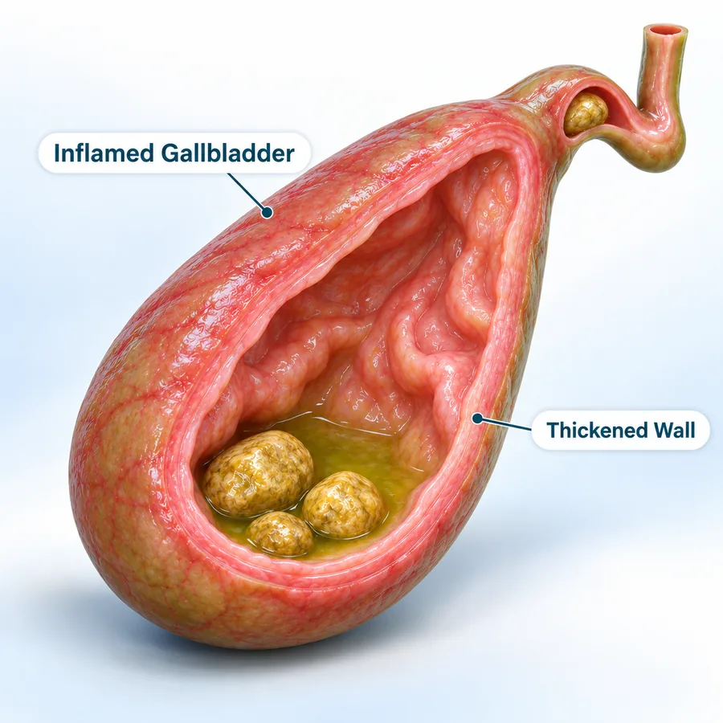
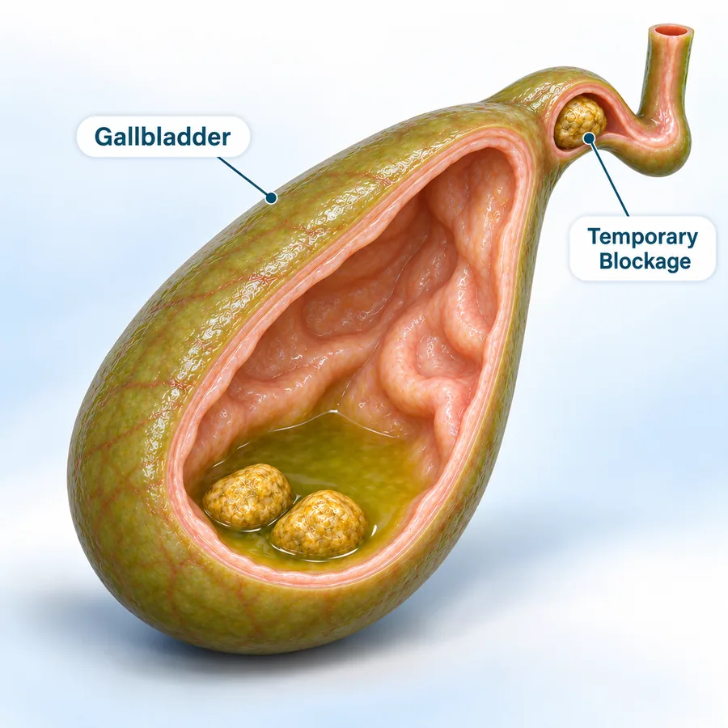
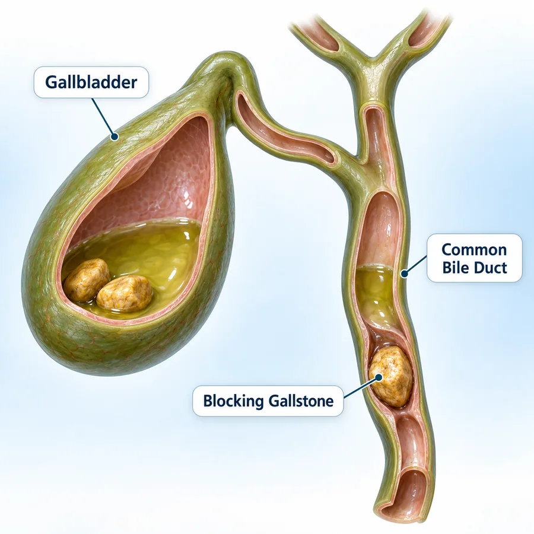
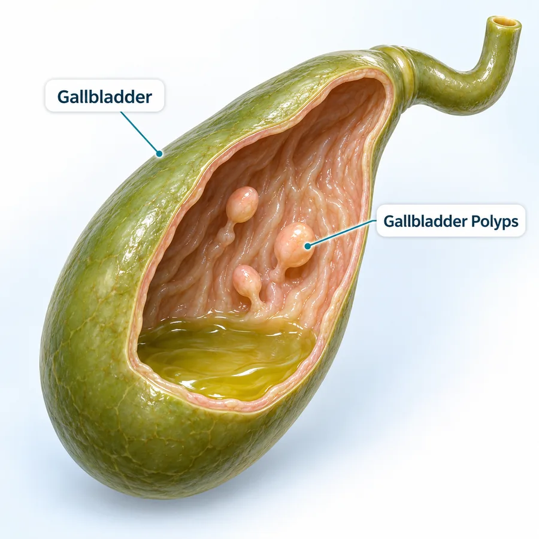
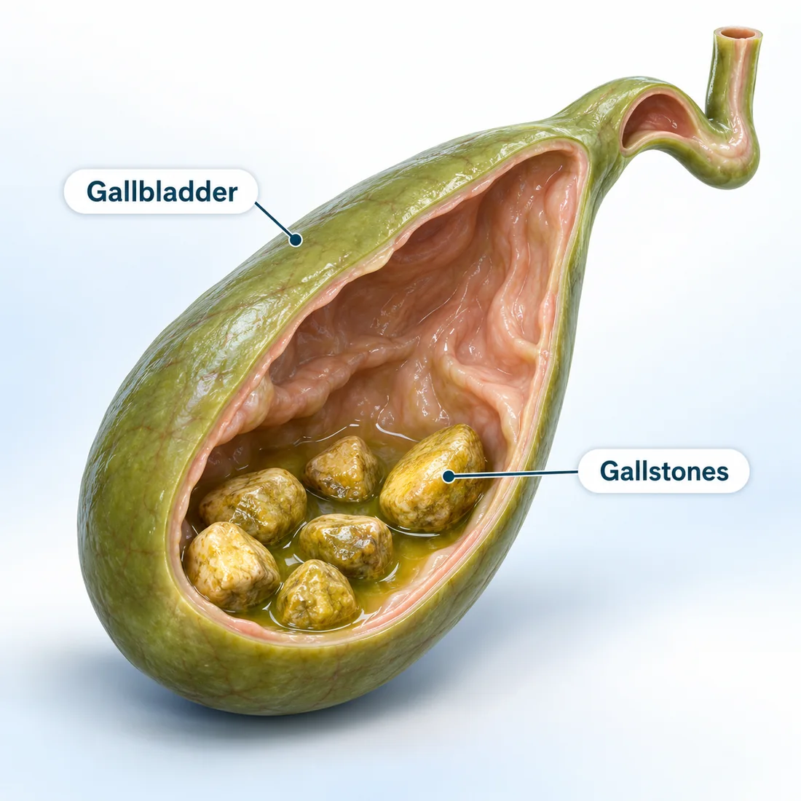

International Travelling Fellowship (SEF)
Minimal access pancreatic surgery under the mentorship of Prof. Yuichi Nagakawa
Focus Area Robotic Pancreatic Surgery16Years of
Experience
Dr. Deeksha Kapoor
Dr. B. Ramamurthi National Gold Medal
DNB General Surgery — Batch of June 2014
Awarded for securing the highest marks nationally in the Diplomate of National Board examinations, marking a benchmark of academic and surgical excellence.
Advitya Healthcares · Kolkata & Baruipur
Already diagnosed, or told you need surgery? Get a second opinion from Dr. Deeksha Kapoor before you decide.
KolkataBaruipur
Consultation venue and timings confirmed at the time of booking
WhatsApp UsExpert gallbladder care with personalised surgical planning. Get expert evaluation and personalised treatment planning for gallstones, gallbladder inflammation and other gallbladder conditions.
Gallbladder conditions at Advitya Healthcares are evaluated within a gastrointestinal and pancreato-biliary surgical practice. The team assesses gallstones, gallbladder inflammation, biliary colic and gallbladder-related bile duct problems, with consultations available in Kolkata and Baruipur.
Your symptoms, examination findings, previous medical history and available reports are all considered before treatment is planned. Whether a gallbladder condition is monitored or treated surgically — and whether a laparoscopic or open approach is suitable — is decided after clinical evaluation and, where required, imaging.
Not every gallstone needs an operation. Stones that cause no symptoms are often simply monitored, while surgery may be recommended for selected patients with symptomatic gallstones or other gallbladder conditions. That decision is made case by case.
Before surgery you are told what the procedure involves, what anaesthesia is planned and what recovery looks like. Afterwards you receive advice on diet, activity and follow-up. Severe or persistent abdominal pain, fever with abdominal pain, repeated vomiting or yellowing of the eyes or skin needs urgent medical assessment.
Surgical Gastroenterologist · HPB & GI Surgical Oncologist · CEO & Medical Head, Advitya Healthcares
Trained at the centres patients usually travel to Mumbai or Delhi for — and operating in Kolkata and Baruipur, so complex surgery does not have to mean leaving home.
Gained knowledge and achieved academic excellence at esteemed institutions
Aligned with global best practices through focused mentorships at world-renowned centers
Minimal access pancreatic surgery under the mentorship of Prof. Yuichi Nagakawa
Focus Area Robotic Pancreatic SurgeryDepartment of Pancreato-Biliary Surgery, Japanese Foundation of Cancer Research under the mentorship of Prof. Yosuke Inoue
Focus Area Surgery for Locally Advanced Pancreatic CancerDepartment of General Visceral & Transplant Surgery, University of Heidelberg under the mentorship(s) of Prof. Markus Buechler & Prof. Thilo Hackert
Focus Area Vascular Resections in Pancreatic SurgeryDepartment of HPB & Transplant Surgery, Beaujon Hospital under the mentorship(s) of Prof. Alain Sauvanet & Prof. Mickael Lesurtel
Focus Area Laparoscopic Pancreatic Surgery & Vascular ResectionsUnder the PancreaCare initiative, surgeons, medical oncologists and radiologists review complex cases together, so the plan, the operation and the recovery have more than one specialist watching over them.
Recognising common symptoms can help you seek timely medical evaluation.
Pain may occur in the upper right or upper middle abdomen and may sometimes be felt in the back or shoulder.
Gallbladder-related pain may become noticeable after eating, particularly after heavier or fatty meals.
Gallbladder problems can sometimes be associated with nausea or vomiting.
Some people experience bloating, fullness or indigestion along with gallbladder symptoms.
Fever or chills along with abdominal pain may indicate inflammation or infection and requires medical evaluation.
Jaundice may occur when bile flow is obstructed and requires prompt medical assessment.
Severe or persistent abdominal pain, fever with abdominal pain, repeated vomiting, jaundice, confusion or significant weakness require urgent medical evaluation.
Call +91 92112 21551Gallbladder problems differ in how they present and how they are assessed. Which of them needs treatment, and what kind, depends on clinical evaluation.
Hard deposits that can form inside the gallbladder. Many cause no symptoms and are found on a scan done for another reason.
Discuss with our team
Inflammation of the gallbladder, which may occur in association with gallstones and can present with pain, fever or tenderness.
Discuss with our team
Pain caused when a gallstone temporarily obstructs bile flow. The pain often settles once the obstruction clears.
Discuss with our team
Gallstones can sometimes obstruct bile ducts or contribute to other complications that need specialist assessment.
Discuss with our team
Small growths detected during gallbladder imaging that may require assessment depending on their characteristics.
Discuss with our team
Conditions affecting bile drainage may require specialist evaluation and, in some cases, additional investigations.
Discuss with our teamNot every gallbladder condition requires surgery. Treatment depends on clinical assessment, symptoms and investigation findings.

The gallbladder is a small organ located beneath the liver. It stores and concentrates bile, which helps the body digest fats.
Bile is made continuously by the liver. Between meals it is stored and concentrated in the gallbladder, and after a meal — particularly a fatty one — the gallbladder releases it through the bile ducts into the small intestine.
Gallstones are hard deposits that can form inside the gallbladder. They vary in size and number, and many people who have them never develop symptoms.
Pain typically occurs when a stone obstructs the outflow of bile. The gallbladder contracts against the blockage, which is why discomfort is often noticed after eating and may be felt in the upper abdomen, back or shoulder.
Recurring upper abdominal pain, pain after meals, or symptoms with fever, vomiting or yellowing of the eyes or skin should be assessed. An ultrasound is commonly used to look at the gallbladder.
Diagnosis and treatment should be based on clinical examination and, when required, imaging.
Specialist care. Personalised planning. Surgical expertise.
Gallbladder conditions are evaluated within a specialist gastrointestinal and pancreato-biliary surgical practice.
Treatment recommendations are based on symptoms, examination findings, investigations and individual clinical circumstances.
Laparoscopic and other surgical approaches may be considered according to clinical suitability.
Symptoms, previous medical history, imaging and relevant reports are considered before treatment planning.
Clear communication about the procedure, preparation, recovery and follow-up.
Consult the Advitya Healthcares surgical team in Kolkata and Baruipur.
See consultation locationsGallbladder surgery, commonly called cholecystectomy, involves removing the gallbladder. The procedure may be recommended for selected patients with symptomatic gallstones or other gallbladder conditions.
The gallbladder is removed through several small incisions, using a camera and specialised instruments so the surgical team can view the area on a screen.
The gallbladder is removed through a single larger incision, giving direct access to the area. An operation that begins laparoscopically is sometimes completed this way when that is considered safer.
The appropriate surgical approach is decided after clinical evaluation.
Your symptoms, medical history and any existing reports are discussed.
The abdomen is examined to assess tenderness and other findings.
An ultrasound, blood tests or further imaging may be advised when needed.
Whether treatment is advised, and which approach suits you, is decided together.
If surgery is recommended, it is carried out with pre-operative preparation.
Diet, activity and follow-up advice is given before discharge.
Major surgery means a hospital stay of several days. This is how health insurance works at Advitya, so cost is not left as a guess.
Where your insurance company or TPA is accepted by the hospital, the covered amount is settled directly with them after approval. Charges your policy does not cover are paid by the patient.
Tell the hospital at admission that you have health insurance. A pre-authorisation request is sent to your insurer or TPA, and the covered amount is settled once they approve it.
Advitya Hospital Baruipur, with an ICU offering critical care and ventilator support, and 24×7 emergency cover. Consultations are also held at Advitya Kolkata — PancreaCare, Rajdanga Main Road.
Check your policy before admission. The list of accepted insurance companies and TPA partners will be published once confirmed. To check yours now, call the hospital desk.
Call +91 92112 21552With consultation options in Kolkata and Baruipur, Advitya Healthcares makes specialist gastrointestinal and gallbladder surgical care more accessible.
Find Your Nearest Consultation LocationSpecialist consultation
Book in KolkataAdvitya Hospital
Book in BaruipurConsultation, surgery and follow-up organised around the patient.
Specialist gastrointestinal and pancreato-biliary surgical care.
Planned consultation, diagnostic and surgical care.
Time to discuss symptoms, reports and treatment options.
Consultations available in Kolkata and Baruipur.
General information only. Advice for your own condition comes from your consultation.
Many gallstones cause no symptoms at all and are found incidentally on a scan. When symptoms do occur, the most common is pain in the upper right or upper middle abdomen, which may be felt in the back or shoulder and often becomes noticeable after a heavier or fatty meal. Nausea, vomiting, bloating or indigestion may occur alongside it.
No. Gallstones that cause no symptoms are often simply monitored. Whether treatment is advised depends on your symptoms, examination findings, imaging and individual clinical circumstances, and that decision is made case by case after evaluation.
It is removal of the gallbladder through several small incisions, using a camera and specialised instruments so the surgical team can view the area on a screen. Suitability depends on your condition, previous surgery and fitness for anaesthesia, so it is not appropriate for every patient.
Cholecystectomy is the medical term for surgical removal of the gallbladder. It may be recommended for selected patients with symptomatic gallstones or other gallbladder conditions, after clinical evaluation.
Not always. An open operation, through a larger single incision, may be considered in selected situations, and an operation that begins laparoscopically is sometimes completed as an open procedure if that is safer. The approach is a clinical decision discussed with you before surgery.
The duration varies with the surgical approach, the condition of the gallbladder and individual factors such as previous abdominal surgery or inflammation. Your surgical team will explain what to expect for your own operation during the pre-operative discussion.
Bile continues to be produced by the liver and flows into the intestine, so digestion generally continues normally without the gallbladder. Some people notice temporary changes in digestion, particularly after fatty meals. You will be given dietary and follow-up advice suited to your situation.
Recovery varies with the surgical approach, your general health and the nature of your work. Specific advice on activity, lifting, driving, diet and returning to work is given by your surgical team before discharge.
Severe or persistent abdominal pain, fever with abdominal pain, repeated vomiting, yellowing of the eyes or skin, confusion or significant weakness require urgent medical evaluation. Go to your nearest emergency department the same day.
Consultations with the Advitya Healthcares surgical team are available in Kolkata and at Advitya Hospital, Baruipur. The consultation venue and timing are confirmed at the time of booking.
Talk to the Advitya Healthcares surgical team to understand your symptoms, diagnosis and available treatment options.
A few details and our team will call you back to confirm.
We have received your appointment request. Our team will call you back to confirm the venue and slot.
For an emergency, call +91 92112 21553 now.